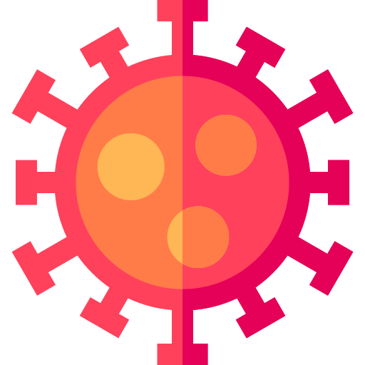

<nav class="navbar navbar-expand-md navbar-light fixed-top" style="background-color: #e3f2fd;">
  <a class="nav-item nav-link navbar-brand" routerLink="">
    
    Covid-19
  </a>
  <button class="navbar-toggler" type="button" data-toggle="collapse" data-target="#navbarNavAltMarkup" aria-controls="navbarTogglerDemo02" aria-expanded="false" aria-label="Toggle navigation">
    <span class="navbar-toggler-icon"></span>
  </button>

  <div class="collapse navbar-collapse justify-content-between" id="navbarNavAltMarkup">
    <div class="navbar-nav">
      <a class="nav-item nav-link" routerLink="">DashBoard</a>
      <!-- <a class="nav-item nav-link" *ngIf="!auth.loggedIn"   routerLink="doctor-form">Register Doctor</a> -->
      <!-- <a class="nav-item nav-link" *ngIf="!auth.loggedIn"  routerLink="user-form">Register User</a> -->
      <a class="nav-item nav-link" *ngIf="auth.loggedIn && auth.isDoctor"  routerLink="patient-list">Patient List</a>
    </div>
    <div class="navbar-nav ml-auto">
      <a class="nav-item nav-link" *ngIf="auth.loggedIn  && auth.isDoctor" routerLink="doctor-def">
        
        {{auth.getName}}
      </a>
      <a class="nav-item nav-link" *ngIf="auth.loggedIn  && !auth.isDoctor" routerLink="user-def">
        
        {{auth.getName}}
      </a>
      <a class="nav-item nav-link" *ngIf="!auth.loggedIn"  routerLink="doctor-login">
        <button type="button" class="btn btn-primary btn-block">
          Login Doctor
        </button>
      </a>
      <a class="nav-item nav-link" *ngIf="!auth.loggedIn"  routerLink="user-login">
        <button type="button" class="btn btn-outline-primary btn-block">
          Login User
        </button>
      </a>
      <a class="nav-item nav-link" (click)="logout()" *ngIf="auth.loggedIn"  routerLink="doctor-form">
        <button type="button" class="btn btn-outline-primary btn-block ml-2">
          Logout
        </button>
      </a>
    </div>
  </div>
</nav>
<router-outlet></router-outlet>